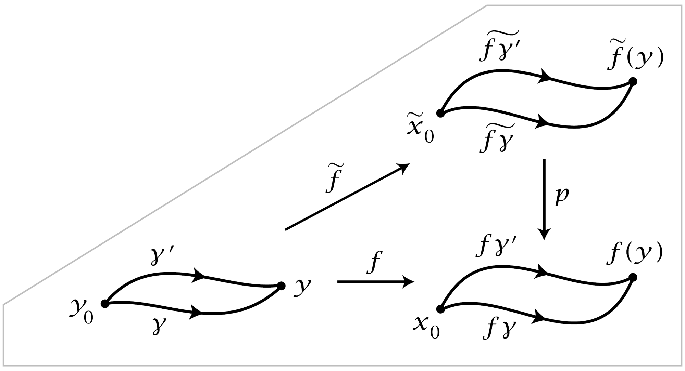

Lifting Properties#
Covering spaces are defined in fairly geometric terms, as maps \(p:\tilde{X} \rightarrow X\) that are local homeomorphisms in a rather strong sense. But from the viewpoint of algebraic topology, the distinctive feature of covering spaces is their behavior with respect to lifting of maps. Recall the terminology from the proof of Theorem: A lift of a map \(f:Y \rightarrow X\) is a map \(\tilde{f} : Y \rightarrow \tilde{X}\) such that \(p\tilde{f}=f\). We will describe three special lifting properties of covering spaces and derive a few applications of these.
First we have homotopy lifting property, also known as the covering homotopy property:
Proposition 1.30. Given a covering space \(p:\tilde{X} \rightarrow X\), a homotopy \(f_t:Y \rightarrow X\), and a map \(\tilde{f}_0: Y \rightarrow \tilde{X}\) lifting \(f_0\), then there exists a unique homotopy \(\tilde{f}_t: Y\rightarrow \tilde{X}\) of \(\tilde{f}_0\) that lifts \(f_t\).
Proof: This was proved as property (c) in the proof of Theorem 1.7. ◻
Taking \(Y\) to be apoint gives the path lifting property for a covering space \(p:\tilde{X} \rightarrow X\), which says that for each path \(f:I \rightarrow X\) and each lift \(\tilde{x}_0\) of the starting point \(f(0)=x_0\) there is a unique path \(\tilde{f}:I \rightarrow \tilde{X}\) lifting \(f\) starting at \(\tilde{x}_0\). In particular, the uniqueness of lifts implies that every lift of a constant path is constant, but this could be deduced more simply from the fact that \(p^{-1}(x_0)\) has the discrete topology, by the definition of a covering space.
Taking \(Y\) to be \(I\), we see that every homotopy \(f_t\) of a path \(f_0\) in \(X\) lifts to a homotopy \(\tilde{f}_t\) of each lift \(\tilde{f}_0\) of \(f_0\). The lifted homotopy \(\tilde{f}_t\) is a homotopy of paths, fixing the endpoints, since as \(t\) varies each endpoint of \(\tilde{f}_t\) traces out a path lifting a constant path, which must therefore be constant.
Here is a simple application.
Proposition 1.31. The map \(p_*: \pi_1(\tilde{X},\tilde{x}_0)\rightarrow \pi_1(X,x_0)\) induced by a covering space \(p:(\tilde{X}, \tilde{x}_0) \rightarrow (X, x_0)\) is injective. The image subgroup \(p_*(\pi_1(\tilde{X}, \tilde{x}_0))\) in \(\pi_1(X, x_0)\) consists of the homotopy classes of loops in \(X\) based at \(x_0\) whose lifts to \(\tilde{X}\) starting at \(\tilde{x}_0\) are loops.
Proof: An element of the kernel of \(p_*\) is represented by a loop \(\tilde{f}_0:I \rightarrow \tilde{X}\) with a homotopy \(f_t:I \rightarrow X\) of \(f_0=p\tilde{f}_0\) to the trivial loop \(f_1\). By the remarks preceding the proposition, there is a lifted homotopy of loops \(\tilde{f}_t\) starting with \(\tilde{f}_0\) and ending with a constant loop. Hence \([\tilde{f}_0]=0\) in \(\pi_1(\tilde{X}, \tilde{x}_0)\) and \(p_*\) is injective.
For the second statement of the proposition, loops at \(x_0\) lifting to loops at \(\tilde{x}_0\) certainly represent elements of the image of \(p_*: \pi_1(\tilde{X}, \tilde{x}_0) \rightarrow \pi_w(X,x_0)\) Conversely, a loop representing an element of the image of \(p_*\) is homotopic to a loop having such a lift, so by homotopy lifting, the loop itself must have such a lift. ◻
Proposition 1.32. The number of sheets of a covering space \(p:(\tilde{X}, \tilde{x}_0) \rightarrow (X, x_0)\) with \(X\) and \(\tilde{X}\) path-connected equals the index of \(p_*(\pi_1(\tilde{X},\tilde{x}_0))\) in \(\pi_1(X, x_0)\).
Proof: For a loop \(g\) in \(X\) based at \(x_0\), let \(\tilde{g}\) be its lift to \(\tilde{X}\) starting at \(\tilde{x}_0\). A product \(h \cdot g\) with \([h] \in H=p_*(\pi_1(\tilde{X}, \tilde{x}_0))\) has the lift \(\tilde{h} \cdot \tilde{g}\) ending at the same points as \(\tilde{g}\) since \(\tilde{h}\) is a loop. Thus we may define a function \(\phi\) from cosets \(H[g]\) to \(\p^{-1}(x_0)\) by sending \(H[g]\) to \(\tilde{g}(1)\). The path-connectedness of \(\tilde{X}\) implies that \(\phi\) is surjective since \(\tilde{x}_0\) can be joined to any point in \(p^{-1}(x_0)\) by a path \(\tilde{g}\) projecting to a loop \(g\) at \(x_0\). To see that \(\phi\) is injective, observe that \(\phi(H[g_1])=\phi(H[g_2])\) implies that \(g_1 \cdot \bar{g}_2\) lifts to a loop in \(\tilde{X}\) based at \(\tilde{x}_0\), so \([g_1][g_2]^{-1} \in H\) and hence \(H[g_1]=H[g_2]\). ◻
It is importnat also to know about the existence and uniqueness of lifts of general maps, not just lifts of homotopies. For the existence question an answer is provided by the following lifting criterion:
Proposition 1.33. Suppose given a covering space \(p:(\tilde{X} , \tilde{x}_0) \rightarrow (X,x_0)\) and a map \(f:(Y, y_0) \rightarrow (X,x_0)\) with \(Y\) path-connected and locally path-connecetd. Then a lift \(\tilde{f}:(Y,y_0) \rightarrow (\tilde{X}, \tilde{x}_0)\) of \(f\) exists iff \(f_*(\pi_1(Y, y_0)) \subset p_*(\pi_1(\tilde{X}, \tilde{x}_0))\).
When we say a space has a certain property locally, such as being locally path-connected, we usually mean that each point has arbitrarily small open neighborhoods with this property. Thus for \(Y\) to be locally path-connected means that for each point \(y \in Y\) and each neighborhood \(U\) of \(y\) there is an open neighborhood \(V \subset U\) of \(y\) that is path-conneceted.
Proof: The ‘only if’ statement is obvious since \(f_*= p_*\tilde{f}_*\). For the converse, let \(y \in Y\) and let \(\gamma\) be a path in \(Y\) from \(y_0\) to \(y\). The path \(f\gamma\) in \(X\) starting at \(x_0\) has a unique lift \(\tilde{f\gamma}\) starting at \(\tilde{x}_0\). Define \(\tilde{f}(y) = \tilde{f\gamma}(1)\). To show this is well-defined, independent of the choice of \(\gamma\), let \(\gamma '\) be another path from \(y_0\) to \(y\). Then \((f\gamma '\))cdot (bar{fgamma})` is a loop \(h_0\) at \(x_0\) with \([h_0] \in f_*(\pi_1(Y, y_0)) \subset p_*(\pi_1(\tilde{X},\tilde{x}_0))\).
{kind=link}
This means there is a homotpy \(h_t\) of \(h_0\) to a loop \(h_1\) that lifts to a loop \(\tilde{h}_1\) in \(\tilde{X}\) based at \(\tilde{x}_0\). Apply the covering homotopy property to \(h_t\) to get a lifting \(\tilde{h}_t\). Since \(\tilde{h}_1\) is a loop at \(\tilde{x}_0\), so is \(\tilde{h}_0\). By the uniqueness of lifted paths, the first half of \(\tilde{h}_0\) is \(\tilde{f\gamma '}\) and the second half is \(\tilde{f\gamma}\) traversed backwards, with the common midpoint \(\tilde{f\gamma}(1)=\tilde{f\gamma '}(1)\). This shows that \(\tilde{f}\) is well-defined.
To see that \(\tilde{f}\) is continuous, let \(U \subset X\) be an open neighborhood of \(f(y)\) having a lift \(\tilde{U} \subset \tilde{X}\) containing \(\tilde{f}(y)\) such that \(p:\tilde{U} \rightarrow U\) is a homeomorphism. Choose a path-connected open neighborhood \(V\) of \(y\) with \(f(V) \subset U\). For paths from \(y_0\) to points \(y' \in V\) we can take a fixed path \((f\gamma) \cdot (f\eta)\) in \(X\) have lifts \((\tilde{f\gamma}) \cdot (\tilde{f\eta})\) where \(\tilde{f\eta}=p^{-1}f\eta\) and \(p^{-1}:U \rightarrow \tilde{U}\) is the inverse of \(o:\tilde{U} \rightarrow U\). Thus \(\tilde{f}(V) \subset \tilde{U}\) and \(\tilde{f} | V = p^{-1}f\), hence \(\tilde{f}\) is continuous at \(y\). ◻
Without the local path-connectedness assumption on \(Y\) the lifting criterion in the preceding proposition can fail, as shown by an example in Exercise 7 at the end of this section.
Next we have the unique lifting property:
Proposition 1.34. Given a covering space \(p:\tilde{X} \rightarrow X\) and a map \(f: Y \rightarrow X\), if two lifts \(\tilde{f}_1,\tilde{f}_2: Y \rightarrow \tilde{X}\) of \(f\) agree at one point of \(Y\) and \(Y\) is connected, then \(\tilde{f}_1\) and \(\tilde{f}_2\) agree on all of \(Y\).
Proof: For a point \(y \in Y\), let \(U\) be an evenly covered open neighborhood of \(f(y)\) in \(X\), so \(p^{-1}(U)\) is decomposed into disjoint sheets each mapped homeomorphically onto \(U\) by \(p\). Let \(\tilde{U}_1\) and \(\tilde{U}_2\) be the sheets containing \(\tilde{f}_1(y)\) and \(\tilde{f}_2(y)\), respectively. By continuity of \(\tilde{f}_1\) and \(\tilde{f}_2\) there is a neighborhood \(N\) of \(y\) mapped into \(\tilde{U}_1\) by \(\tilde{f}_1\) and into \(\tilde{U}_2\) by \(\tilde{f}_2\). If \(\tilde{f}_1(y) \neq \tilde{f}_2(y)\) then \(\tilde{U}_1 \neq \tilde{U}_2\), hence \(\tilde{U}_1\) and \(\tilde{U}_2\) are disjoint and \(\tilde{f}_1 \neq \tilde{f}_2\) throughout the neighborhood \(N\). On the other hand, if \(\tilde{f}_1(y) = \tilde{f}_2(y)\) then \(\tilde{U}_1 = \tilde{U}_2\) so \(\tilde{f}_1 = \tilde{f}_2\) on \(N\) since \(p\tilde{f}_1 = p\tilde{f}_2\) and \(p\) is injective on \(\tilde{U}_1 = \tilde{U}_2\). Thus the set of points where \(\tilde{f}_1\) and \(\tilde{f}_2\) agree is both open and closed in \(Y\). ◻